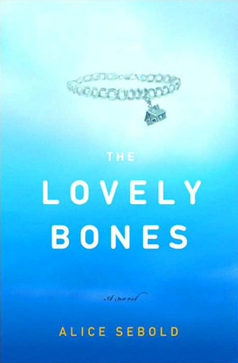
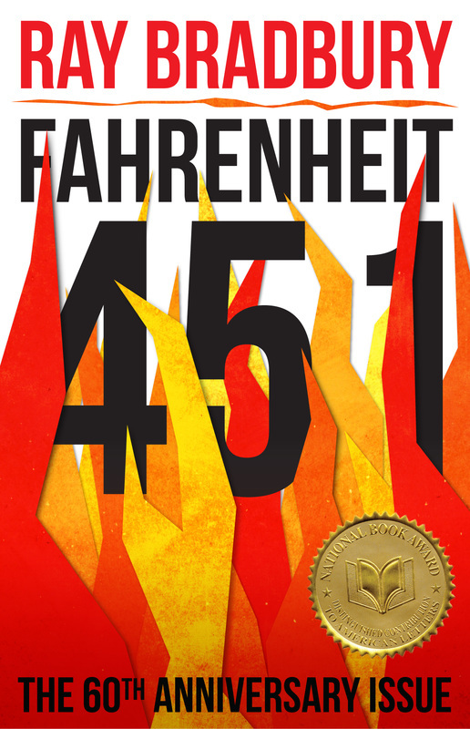
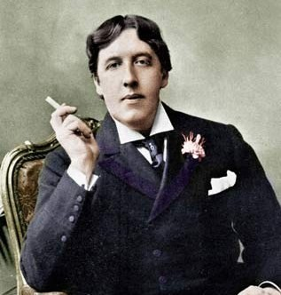

A Study in Scarlet (1887)
by Sir Arthur Conan Doyle
A great introduction to the most famous literary character 'Sherlock Holmes' that has been adapted the most in screens and other works in literature unlike anyone, along with his partner 'Dr. John Watson'. ... Read More
- Nov 26, 2016
- Genres:
- Classics | Mystery | Crime | Religion
The Canterville Ghost (1887)
by Oscar Wilde
It was so sweet and funny. And Gosh, the writing style of Oscar Wilde nails every single time. The story was good and is actually a parody of Americans by an English (Sorry, Irish I meant :P) ... Read More
- Finished: Nov 6, 2016
- Genres:
- Classics | Humour | Horror
Things Fall Apart (1958)
by Chinua Achebe
The African literature after the colonialization was mostly written by the Europeans, so this series of books a.k.a 'The African Trilogy' was written by Achebe an African Cristian who then rejected his Christian name and settled on the traditional one in the response of the books such as 'Heart of Darkness' by Joseph Conrad who described Africans as cultureless savages. ... Read More
- Finished: Nov 5, 2016
- Genres:
- Classics | Historical-Fiction | Conflict | Religion
Tuesdays with Morrie (1997)
by Mitch Albom
"If you hold back on the emotions--if you don't allow yourself to go all the way through them--you can never get to being detached, you're too busy being afraid. You're afraid of the pain, you're afraid of the grief. You're afraid of the vulnerability that loving entails. But by throwing yourself into these emotions, by allowing yourself to dive in, all the way, over your heard even, you experience them fully and completely." ... Read More
- Finished: Oct 29, 2016
- Genres:
- Memoir | Non-Fiction | Self-Help
The Catcher in the Rye (1951)
by J.D. Salinger
Okay, this was just great ... Actually, I was very reluctant towards this book till once I read a few pages in library and I was totally taken by the passive language used in it. ... Read More
- Finished: Oct 18, 2016
- Genres:
- Classics | Young-Adult | Fiction
The Outsiders (1967)
by S.E. Hinton
The Outsiders is a poignant story of the rivalry between the teenagers of The Greasers and The Socs - two hoods of socioeconomic differences. The story has a great flow of stream which can truly metaphorise the classic as well as contemporary conflicts in various parts of a nation thriving with immigrants. ... Read More
- Finished: Sept 4, 2016
- Genres:
- Classics | Historical-Fiction | Young-Adult | Conflict
Persuasion (1818)
by Jane Austen
A subtly subversive story of English literature. This was my first Jane Austen's read. It expresses the times of early-nineteenth-century perfectly or without any extravagant drama. ... Read More
- Finished: Aug 20, 2016
- Genres:
- Classics | Romance | Historical-Fiction
The Curious Case of Benjamin Button (1922)
by F. Scott Fitzgerald
I was so curious to read this as the adaptation directed by David Fincher is one of my most favourite movies of all time ... Read More
- Finished: Aug 3, 2016
- Genres:
- Classics | Fantasy | Fiction
Carrie (1974)
by Stephen King
- Finished: July 23, 2016
- Genres:
- Fantasy | Horror | Paranormal | Thriller

Steve Jobs (2011)
by Walter Isaacson
This book is an epic biography of a genius who made various remarkable changes in our world i.e. Made a dent in the universe (from Jobs' perspective) is also a history of the most exciting time in the age of computers, the times when the Silicon Valley was blooming ... Read More
- Finished: July 15, 2016
- Genres:
- Biography | History | Non-Fiction
CURRENTLY READING


FAVOURITE BOOK [2016]
MOVIE OF THE YEAR [2017]
FOLLOW ME

Favourite Writers
